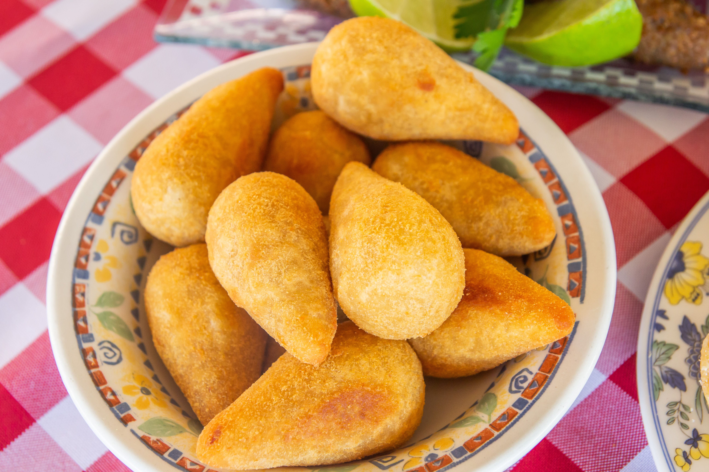

Home
Coxinha

Description
Coxinha (little chicken thigh) is a Brazilian popular street food snack of Paulista origin which consists
of chopped or shredded chicken meat, covered in dough, molded into a shape resembling a
teardrop, battered and fried.
Ingredients
- 1 1/2 pounds boneless skinless chicken breasts (about 4 halves)
- 4 to 5 cups chicken broth
- 1 carrot, halved
- 2 medium onions
- 2 bay leaves
- 8 ounces cream cheese, softened
- 1 lime, juiced
- 2 cloves garlic
- 2 tablespoons butter
- Kosher salt, to taste
- Pepper, to taste
- 3 to 3 1/2 cups all-purpose flour
- 2 large eggs
- 2 to 3 cups fine breadcrumbs
- Vegetable oil, for frying